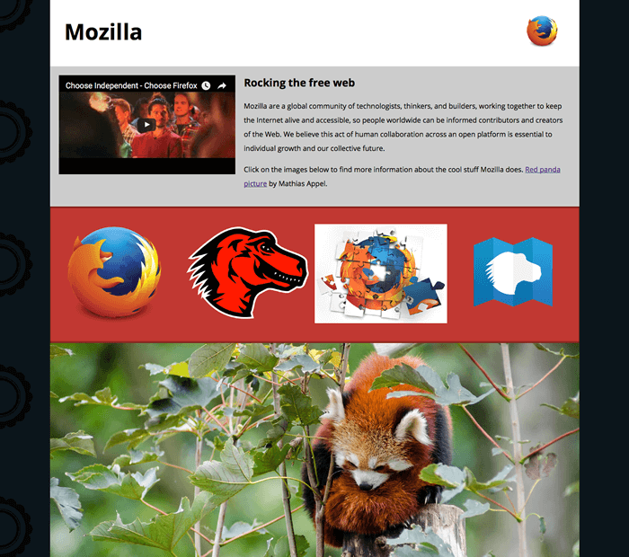

Mozilla splash page
In this assessment, we'll test your knowledge of some of the techniques discussed in this module's articles,
getting you to add some images and video to a funky splash page all about Mozilla!
Prerequisites: |
Before attempting this assessment you should have already worked through the rest of the Multimedia and embedding module. |
|---|
Objective: |
To test knowledge around embedding images and video in web pages, frames, and HTML responsive image techniques. |
|---|
Starting point
To start off this assessment, you need to grab the HTML and all the images available in the mdn-splash-page-start directory on github. Save the contents of index.html in a file called index.html on your local drive, in a new directory. Then save pattern.png in the same directory (right click on the image to get an option to save it.) Access the different images in the originals directory and save them in the same way; you'll want to save them in a different directory for now, as you'll need to manipulate (some of) them using a graphics editor before they're ready to be used. Alternatively, you could use an online tool such as Glitch to create your example. This would also be useful if you want to get it assessed, or ask for help — see the Assessment or further help section at the bottom of this page. Note: The example HTML file contains quite a lot of CSS, to style the page. You don't need to touch the CSS, just the HTML inside the
element — as long as you insert the correct markup, the styling will make it look correct.Example
The following screenshots show what the splash page should look like after being correctly marked up, on a wide and narrow screen display.
Assessment or further help
If you would like your work assessed, or are stuck and want to ask for help: Put your work into an online shareable editor such as CodePen, jsFiddle, or Glitch. Glitch is probably better for this example, as it allows you upload assets like images, whereas some of the other tools don't. Write a post asking for assessment and/or help at the MDN Discourse forum. Add the "learning" tag to your post so we are able to more easily find it. Your post should include: A descriptive title such as "Assessment wanted for Mozilla splash page". Details of what you would like us to do — for example what you have already tried, if you are stuck and need help,. A link to the example you want assessed or need help with, in an online editor. This is a good practice to get into — it's very hard to help someone with a coding problem if you can't see their code. A link to the actual task or assessment page, so we can find the question you want help with.